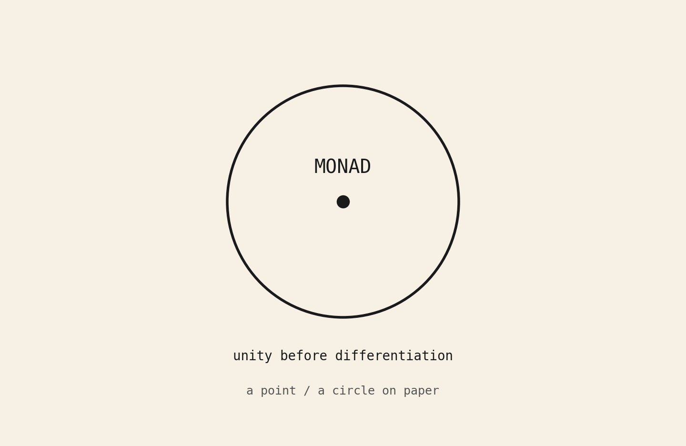
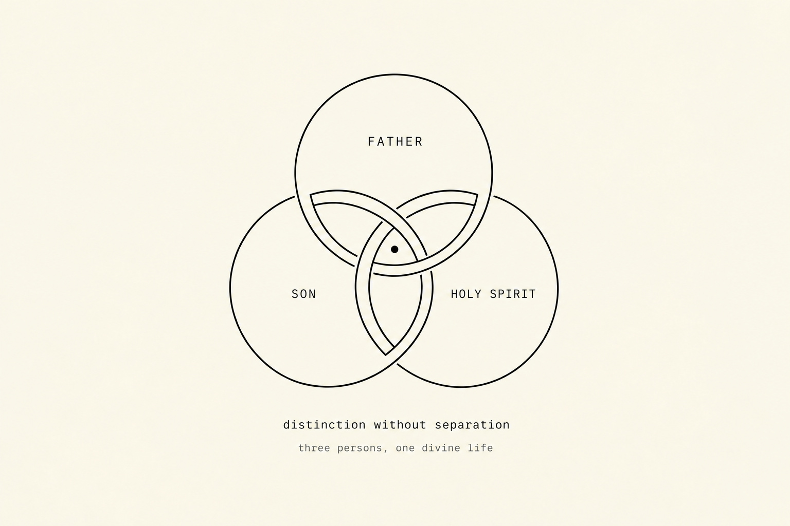
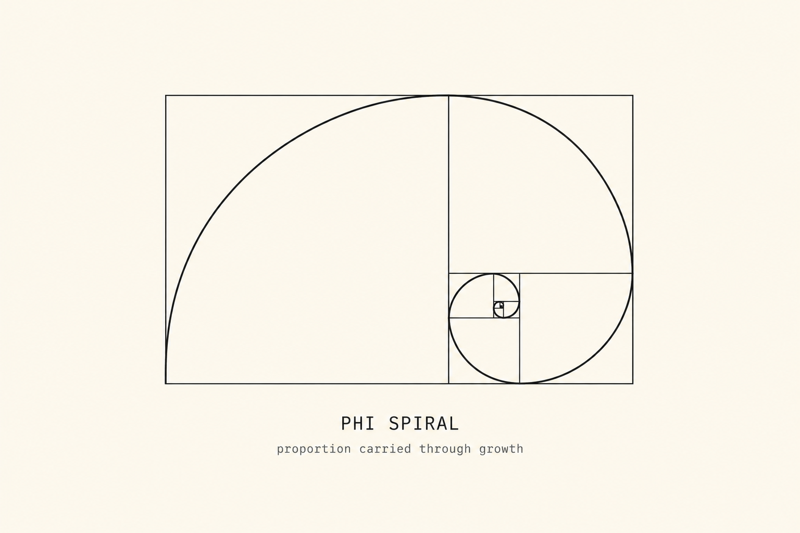
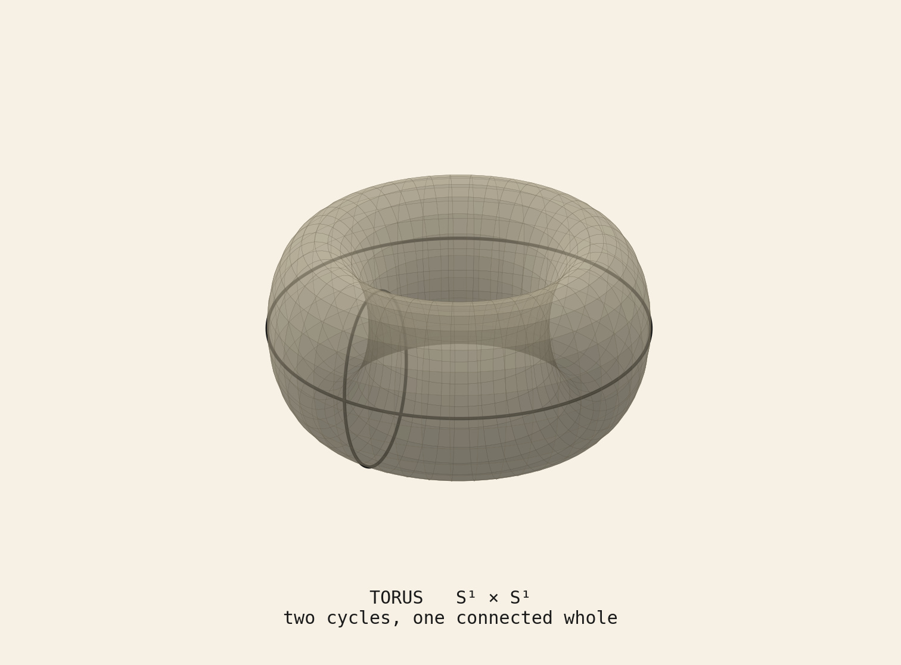
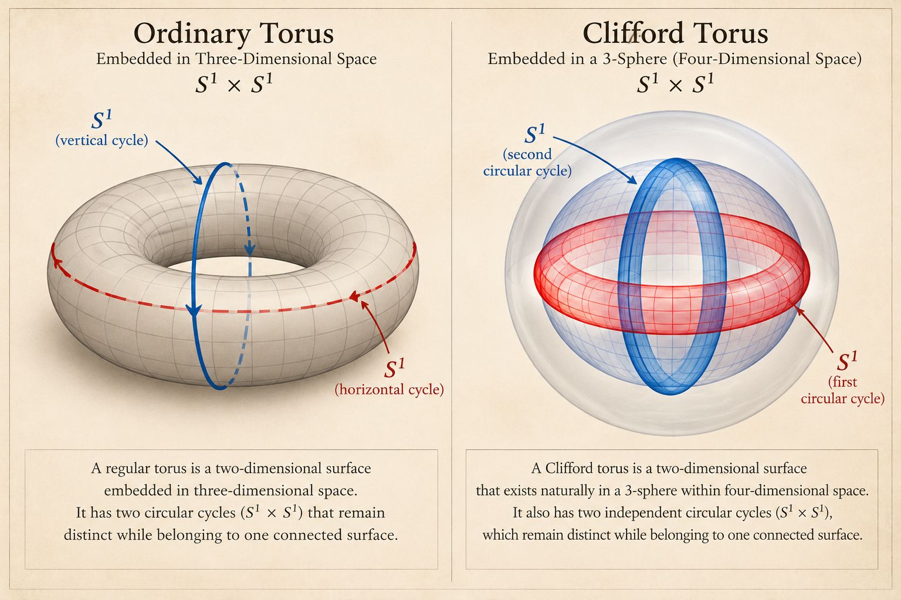
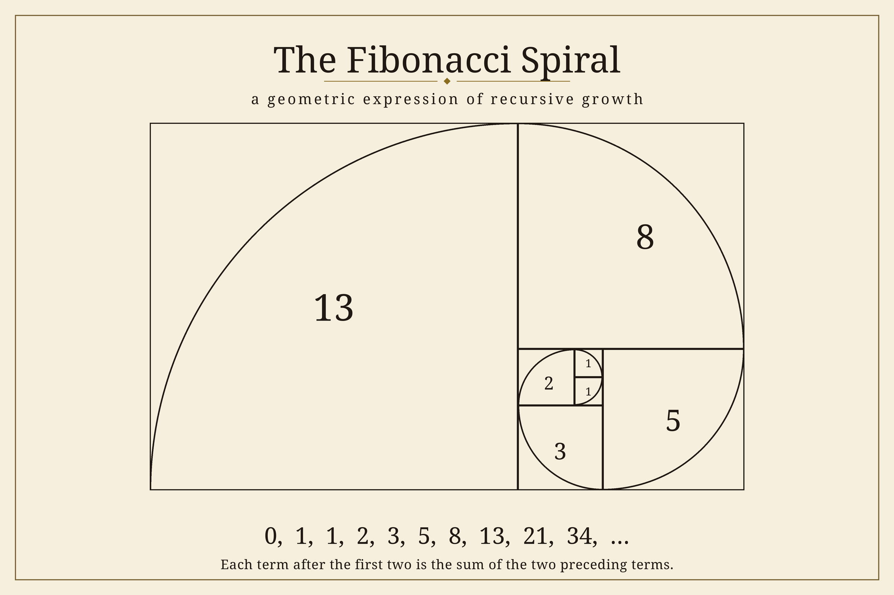
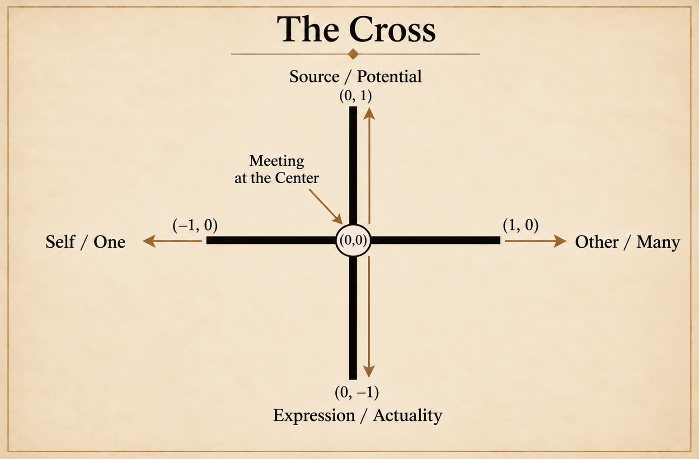
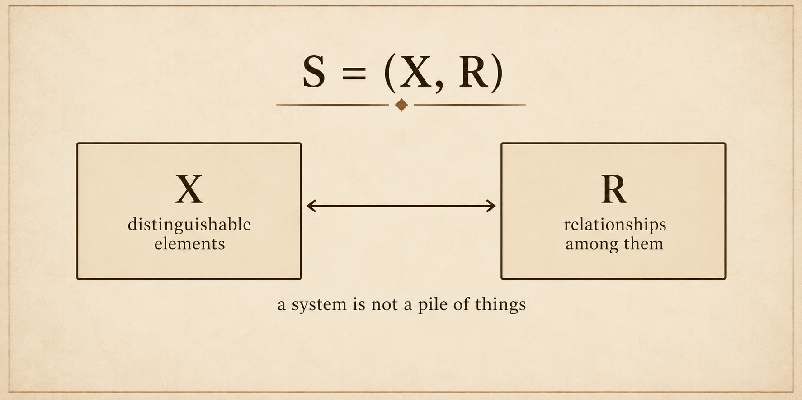
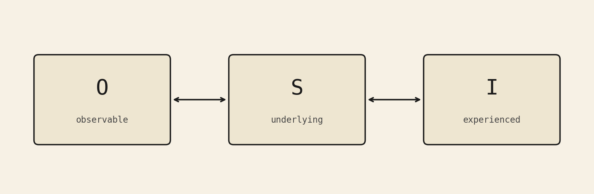

The Bridge
From Generative Movement to Geometric Form
The movement developed in Project 1 can now be approached from another direction.
So far, we have considered reality from within: as a movement of unity, differentiation, possibility, relationship, and becoming. We have asked how distinction can arise from an underlying whole without requiring that whole to break apart, and how what becomes can open new potential for what follows.
The Bridge begins the work of connecting this account of becoming to the organized forms through which it might be expressed.
What appeared in Project 1 as generative becoming must now be related to the language of geometry, mathematics, and organized structure. The task is not to move directly from metaphysical concepts to their physical expressions, but to establish a conceptual and mathematical connection between them. The Bridge explores whether the relational movement described in Project 1 can be expressed through spatial and mathematical structures, creating a basis for the investigation of organized form that follows in Project 2.
This change of language matters. We move from the language of becoming toward the language of space, continuity, structure, and form. Yet we do not simply abandon one language for another. We seek a way to connect them: to understand how the metaphysical account of relationship and becoming might correspond to geometrical and mathematical expressions.
The Bridge is not a second metaphysics, nor is it an attempt to prove the metaphysical account through mathematics. It is an examination of correspondence. If relationship is central to the account developed in Project 1, can geometry give us a precise way to think about connection, distinction, convergence, and the generation of new structure?
To explore that question, we must first clarify what is meant by the inside and the outside.
The Inside–Outside Distinction
From the outside, a system can be approached through what can be observed, measured, and described: its states, boundaries, interactions, behavior, and physical forms. From the inside, attention turns toward the generative relational process through which those forms become what they are—the organization and interaction by which a system maintains its coherence and develops.
These are not two separate realities, nor are they competing explanations that must cancel each other out. They are distinguishable ways of approaching the same becoming. The outside concerns organized actuality; the inside concerns the generative process through which actuality becomes possible.
The distinction does not mean that the inside is always hidden in a mystical sense, or that the outside is just superficial. Observable structure is real and open to investigation. The processes and relations that produce or sustain that structure are real, even when they cannot be seen directly in the same way as the forms they organize.
What appears from the outside as a formed reality is connected to the processes and relationships through which it came to be.
Meanwhile, those processes are not abstractions detached from actuality. They become intelligible through the structures, behaviors, and effects in which they are expressed.
The question is not which side is real. The question is how generative process and organized actuality remain related within one account of reality.
The relational field, as developed in Project 1, names the underlying unity within which differentiation, possibility, and becoming unfold within creation. From within, this movement can be considered as generative process; from without, it can be approached as increasingly organized form. The distinction between inside and outside therefore does not divide reality into two worlds. It offers two perspectives on a connected process.
This distinction must be held carefully. To emphasize the inside is not to dismiss measurement or observable structure. To emphasize the outside is not to establish that observable effects exhaust everything that can meaningfully be said about the process that produces them. Neither perspective should be made to do the work of both.
The aim is to hold them together without collapsing one into the other. We can investigate the outside through observation and experiment while remaining attentive to the relationships that organize what is observed. We can consider the inside as a philosophical question without treating physical actuality as an illusion or a secondary reality.
The principle can be stated simply: distinction remains; separation does not.
If this relational pattern is more than a verbal description, it should be possible to express aspects of it in geometric and mathematical language. That possibility is what the Bridge now explores.
What the Bridge Has to Do
If relationship is central to the framework, then the question is not only what things are, but how the relations among them form an organized whole. Geometry offers a way to make certain kinds of relation visible. It can represent continuity, connection, intersection, and repeated structure. It cannot, by itself, establish that these structures are the ultimate basis of reality.
It does not claim that the universe is a sacred diagram, that physics secretly encodes a creed, or that measurement is an inferior form of knowing. Nor does it claim that experience is an illusion waiting to be explained away. The claim is narrower: some geometric and mathematical structures can provide precise models for thinking about patterns of relation described in Project 1.
The torus will be considered as a geometry of continuity and connectedness. The Clifford torus extends the discussion by introducing an additional spatial dimension, allowing two independent circular dimensions to exist within a single mathematical structure. The Fibonacci sequence will offer a simple example of successive structure generated by a rule that carries forward what came before. The Cross will provide an image of two directions meeting at a center.
These are different mathematical objects and patterns. Their value does not depend on pretending they are identical, or that each one proves the same metaphysical conclusion. Rather, each makes a different feature of relational organization available for examination.
Geometry occupies a useful middle ground between metaphysical reflection and scientific investigation. Metaphysics asks what reality might be like at its deepest level. Mathematics gives exact form to certain relationships. Science investigates the structures and processes that occur in the physical world. These activities can inform one another, but they do not have interchangeable standards of proof.
The Bridge asks whether a relational intuition can be expressed with enough clarity to travel into a different language. Project 2 will then ask what survives when that intuition is brought into contact with specific scientific accounts and tests.
Two Standpoints, One Structure
The inside & The outside. Both arise within the same underlying relational field. Neither description is complete. Each catches something the other cannot.
The distinction is not simply between an objective world and a subjective one. It is between becoming as organized actuality and becoming as the generative relational process through which that actuality comes to be.
Consciousness is not something added to becoming afterward. It emerges within the relational process as that process becomes increasingly organized, constrained, reflexive, and capable of self-recognition. What develops through becoming, then, is not necessarily consciousness arising from something wholly unrelated to it, but the increasing expression and organization of a capacity grounded in the deeper relational structure from which becoming unfolds.
And this is where we encounter the distinction within our own experience. From the inside, consciousness is the experience of becoming as generative relational movement—the ongoing process of sensing, responding, recognizing, and participating. From the outside, that same becoming can be encountered as organized expression: a body, a nervous system, patterns of activity, behavior, and other observable forms. What we experience subjectively and what we observe objectively are therefore not necessarily two different realities. They are the inside and outside of the same relational becoming, encountered from different standpoints.
The coherence of that relational structure, however, does not imply that the created relational field is itself conscious. Its coherence can instead be understood as reflecting the deeper coherence of the divine relational field from which it ultimately derives.
The paradox is not that the two descriptions of reality differ. It is that we keep treating their difference as evidence of two worlds. But the inside and the outside are different positions within the same underlying relational structure.
The boundary between them is not absolute; it emerges from the relations that organize the system. Move the standpoint, and the same relational structure can appear differently. The two perspectives are not rivals. They are different ways of encountering the same reality.
This is why I refuse both reduction and separation. Reduction says the outside is sufficient to account for the inside, translating the generative process into the observable forms it produces. Separation treats the inside and outside as fundamentally divided rather than as different aspects of the same reality. The third option is structural: reality is one connected whole, encountered from more than one direction, with the inside and outside emerging as different perspectives within the same relational structure.
Distinction remains. Separation does not.
The torus is the geometric and mathematical expression of this third option. Its two circular directions are distinct, yet they belong to one continuous surface. Positions can be distinguished without creating a boundary that divides the whole into separate realities. There is no final wall at the end of a rotation; the movement continues within the same connected structure.
This is the pattern I mean by distinction without separation: different directions of approach, one underlying whole.
Before the torus can carry that third option, something simpler has to be granted. A connected whole still needs a beginning that is not yet two circles and not yet a surface: a unity that can be marked without being cut off from what it will express.
That first geometric mark is the Monad.
The torus is what the mark becomes when distinction is allowed to unfold through the phi spiral, travel through relationship, and return without losing its connection to the whole.
The Monad
The Monad is not a physical object and not a measured point in space.
It names unity before physical differentiation—the underlying whole from which distinct relationships become possible.
The Monad names the Undivided Potential.
A point can symbolize it on paper: not as a location, but as a way of representing unity without internal distinction. A circle can symbolize wholeness, provided we do not mistake the drawing for a physical boundary.

The drawing is not the thing.
What matters is the question the Pythagoreans also wrestled with:
How can many things come from one without becoming a pile of disconnected parts?
The Monad names the unity from which distinction can arise without destroying the whole. What emerges from that unity is not a collection of separate things, but relationship—a generative process in which distinction, interaction, and becoming remain part of a greater whole.
The unity is therefore not left behind when differentiation begins. It remains present within the relationships that emerge from it.
The Divine Relational Field
If the Monad names unity before differentiation, then the Divine Relational Field names the underlying relational potential through which distinction can arise and possibility can emerge.
It is not a physical field, nor is it another object contained within the Monad. It is a way of describing unity as capable of relationship: a continuous potential for distinction, interaction, and becoming.
The Divine Relational Field closely resembles the theological idea of perichoresis—mutual indwelling in which distinction remains without separation—while expressing that relational unity in the metaphysical language developed.
Within this field, what becomes distinct does not become separate from the whole. Difference arises through relationship. The many emerge without requiring the one to be abandoned.
Perichoresis: Unity Through Relationship
The theological idea of perichoresis offers a way of understanding how unity and distinction can coexist without separation. In Christian theology, it describes the mutual indwelling of the Father, Son, and Holy Spirit, each distinct yet inseparable within the one divine life.

The diagram above represents this relationship through three interwoven circles, each corresponding to one of the three divine Persons. No circle stands entirely apart from the others, and none must lose its distinction for the three to form a unified whole. Their interweaving offers a geometric illustration of distinction without separation.
At the shared center is a single point representing the Monad: the unity that remains undivided throughout the relationship of the three Persons. The diagram therefore does not present three separate centers of unity, but one underlying unity within which distinction remains.
The diagram is not intended to define the Trinity mathematically or to suggest that the divine Persons are merely parts of a larger structure. Rather, it provides a visual analogy for contemplating how genuine distinction can exist within an undivided unity.
Within the framework developed here, perichoresis offers a theological parallel to the Divine Relational Field. Unity is not opposed to relationship, nor does relationship require unity to be abandoned. The many can emerge without the one ceasing to be whole.
With this relational unity established, we can now turn to the Phi spiral and consider how distinction begins to unfold.
The Phi Spiral: The Unfolding of Distinction
If the Divine Relational Field describes the potential for relationship, the phi spiral offers a geometric way to represent its unfolding.

Beginning from a point of origin, the spiral expands through proportion, expressing a movement in which each successive stage relates to what came before. What begins as a single distinction can develop into an increasingly ordered pattern, with each stage participating in a larger continuity.
Within this framework, the phi spiral represents the unfolding of the first distinction: the movement from undivided potential toward differentiated expression. It does not create the relational field, nor does it constitute the field itself. Rather, it gives geometric expression to the possibility of distinction developing through relationship.
The spiral therefore serves as a conceptual bridge between unity and the more complex geometry that follows. It allows us to consider how distinction can unfold without being understood as an absolute separation from its source.
From Spiral to Torus
The torus extends this geometric exploration from unfolding to circulation and return.
Where the spiral expresses proportional development, the torus offers a representation of movement that circulates through a continuous form. Distinction does not simply move outward from its origin; it participates in a larger pattern of relationship in which movement and return remain connected. The torus thus becomes a geometric expression of a central principle of this inquiry: what becomes distinct need not become separate from the whole.
The Monad names unity. The Divine Relational Field names the potential for relationship. The phi spiral represents the unfolding of distinction. The torus represents circulation and return.
Together, these concepts offer a progression from undivided potential toward differentiated relationship, and from relationship toward a geometry of becoming.

The torus gives the Monad a spatial form without abandoning the idea of unity. The divine relational field makes this possible: unity can remain undivided while genuine distinction emerges within relationship. Within this field, differentiation can occur, opening possibility for further relationship and becoming.
To call the torus “the only geometric shape” would be too strong mathematically. What matters is the particular kind of unity the torus can represent—a unity that contains distinction while remaining connected.
A torus is the product of two circles: S¹ × S¹. This gives it two independent, non-contractible loops: one that goes through the hole, and one that goes around the tube. These loops remain distinct. One cannot be continuously deformed into the other
without leaving the surface. In other words, each represents a different circular direction built into the same structure.
And yet they live on a single connected, closed, two-sided surface with no edge. Any point on the surface can be reached from any other without leaving the surface. The two generating cycles do not exist as separate objects; they co-constitute the whole thing. That is unusually close to the claim the framework needs: two remain two and are still one circulating relation.
A torus is therefore a continuous, connected surface with two circular directions. Positions on it can be distinguished, but they remain parts of one whole. Movement can proceed around either circle and return.
The contrast becomes clearer when we look at nearby geometric possibilities. On a sphere, everything is connected, but there are no two privileged, non-equivalent cycles; every loop can be shrunk to a point. Two separate circles or two spheres are distinct, but not connected. A cylinder has circular directions joined by a surface, but its circles are boundaries, so the space is not closed. A figure-8 has two distinct loops meeting at a pinch, but it is not a smooth closed surface. A Möbius strip is connected and can look like “two that become one,” but it is one-sided and has a boundary. Higher-genus surfaces carry more than two independent cycles—extra structure the framework does not need.
Among compact orientable surfaces without boundary, the torus is the simplest object that carries exactly two independent cycles that cannot be reduced to each other and that together generate one connected space.
There is no final wall at the end of a rotation.
That return is written:
0 ≡ 2π
0 and 2π are not the same number in ordinary arithmetic.
They represent the same position when the coordinate repeats.
You have moved, and you are still in the same whole.
The surface can be described using two angles,
Θ and ϕ, each running from 0 to 2π.
One circle goes around the central opening. The other goes around the tube.
Together they allow every position to be described without cutting the surface into separate pieces.
The torus is the minimal closed, orientable surface in which two distinct, independent cycles remain distinct while belonging to a single connected whole. That is the geometric signature of the relationship this work is describing—not the only shape capable of expressing unity and distinction, but a structure in which two independent cycles participate in one continuous whole.
This is why the torus can serve as a representation of both the larger movement and the mini-torus of the Trinity pattern: the same relational pattern expressed at another scale. It offers a way to visualize circulation, continuity, and return, but it does not, by itself, explain how the movement enters constraint, how it returns toward its source, or how the same generative pattern might emerge again at another scale.
Beyond the Torus: The Clifford Torus
The torus gives us a way to represent distinction without separation within a single connected surface. Its two independent circular cycles remain distinct while belonging to one continuous whole. Yet the generative movement described here extends beyond the geometry of a single torus. If creation unfolds through the movement from Undivided Potential to Differentiation, Possibility, Relationship, and Becoming, we need a way to explore how distinct circular dimensions can belong to one underlying relational structure and how that structure might be understood in relation to the spatial dimension of creation. This is where the mathematics of the Clifford torus becomes useful.
A Clifford torus is a mathematical torus embedded within a three-dimensional sphere, S³, which exists in four-dimensional Euclidean space. Like an ordinary torus, it has the underlying mathematical structure of the product of two circles: S¹ × S¹

The expression S¹ × S¹ describes a structure formed by two circular factors. Each factor represents a circle, and together they constitute one connected, two-dimensional surface.
The same product structure describes both the ordinary torus and the Clifford torus. The difference lies in how that structure is embedded within a larger space. In an ordinary torus, the surface is embedded in three-dimensional space. In a Clifford torus, the same type of surface is embedded within S³, a three-dimensional sphere in four-dimensional Euclidean space. The two circular dimensions remain distinct and independent, but the larger geometric setting is different.
At first, this is difficult to visualize. We can picture a circle and an ordinary torus in three-dimensional space, but we cannot directly visualize four-dimensional Euclidean space as a whole. Its geometric structures must be represented indirectly through projections, models, or mathematical descriptions.
One way to begin understanding the Clifford torus is to recognize that its two circular dimensions are distinct without being separate structures. Neither circle simply sits inside the other as one independent torus nested within another. Instead, the two circular factors contribute independent dimensions to the same mathematical surface.
This is the geometric relationship that matters for the present inquiry: distinct circular dimensions can remain independent while participating in one connected structure.
The ordinary torus shows how two independent circular directions can belong to one connected surface. The Clifford torus extends this inquiry by placing a two-dimensional torus within a higher-dimensional geometric setting. The surface itself remains two-dimensional; what changes is the space in which it is embedded.
This distinction matters for the interpretation that follows. The mathematics describes a geometric structure and the space in which that structure is situated. It does not, by itself, describe a physical process of creation. The question of how this distinction might illuminate the relationship between an underlying order and spatial expression belongs to the philosophical interpretation developed here.
The Clifford torus therefore extends the geometric inquiry begun with the ordinary torus. It offers a more precise mathematical setting in which to consider how distinct movements can remain independent while belonging to a greater whole.
From Circular Relationship to Spatial Creation
The distinction between the ordinary torus and the Clifford torus gives us a way to consider how two independent circular dimensions belong to one underlying geometric structure and how that structure might be interpreted in relation to spatial creation.
A circle can be described using two coordinates in a plane, (x, y). An ordinary torus, when embedded in three-dimensional space, requires three ambient coordinates:
(x, y, z)
The addition of z does not create a third dimension within the torus’s surface. The torus remains a two-dimensional surface. Rather, the three coordinates locate points in the surrounding three-dimensional space, allowing the surface to be represented as a geometric form within it.
Within the framework developed here, this distinction offers a way to consider the relationship between circular dimensions, underlying relational structure, and creation. The two independent circular directions can represent distinct but connected movements. The relationship through which those movements belong to one organized whole can then be considered separately from the spatial expression of that whole.
This is a metaphysical interpretation of the geometry, not a mathematical claim that the z-axis itself produces relationship or creation. Mathematically, the coordinates describe positions in space. Philosophically, the distinction between a geometric structure and the space in which it is embedded offers a way to explore how distinct movements can belong to one connected whole.
The Clifford torus extends this geometric picture into four-dimensional Euclidean space. Its points can be described using four ambient coordinates:
(x, y, z, w)
Within the framework developed here, these coordinates offer a way to consider the relationship between two independent circular dimensions, the underlying relational structure that connects them, and the spatial creation expressed through that structure.
The coordinates do not, mathematically, correspond one-to-one with the two circular factors of S¹ × S¹. Those factors describe the torus’s intrinsic circular structure, while x, y, z, and w locate points in the surrounding four-dimensional space. The meanings assigned to these coordinates below belong to the metaphysical interpretation developed here.
Within that interpretation, x and y represent the two circular dimensions: distinct movements that participate in one connected structure. Neither is identical to the other, yet neither is understood in isolation from the larger relationship.
The coordinate z represents the underlying relational structure through which these two circular dimensions belong together. Relationship is not simply another circle placed beside the first two. It is the principle of connection through which distinct circular movements can participate in one organized whole.
The coordinate w represents the spatial dimension of creation: the expression of this underlying relational structure as an organized spatial world. Where x and y represent the two circular dimensions, and z represents their underlying relational structure, w represents the spatial expression of that structure through creation.
In this interpretation, creation is neither identical to relationship nor entirely separate from it. The spatial world represents the expression of an underlying relational order. What is expressed spatially remains distinct from the relationship through which it is understood, while remaining connected to that relationship.
Mathematically, the Clifford torus is a two-dimensional surface embedded within S³, itself a three-dimensional sphere in four-dimensional Euclidean space. Its two circular factors are represented by S¹ × S¹, while the four ambient coordinates locate points within the surrounding space. The mathematics does not assign these coordinates the metaphysical meanings developed here. Rather, this interpretation uses the distinction between a geometric structure and its embedding space to explore the relationship between circular dimensions, underlying relational structure, and spatial creation.
The significance of this interpretation is not that each additional coordinate automatically creates another level of reality. Nor does the higher-dimensional setting itself produce the generative movement. The geometry provides a way to consider how distinct circular dimensions can belong to one underlying structure and how that structure can be interpreted in relation to spatial creation.
The assignment of meanings to x, y, z, and w in this discussion is a symbolic mapping within my metaphysical framework, not a standard interpretation of the Clifford torus. In the usual mathematical description, the four ambient coordinates locate points in four-dimensional Euclidean space; the two circular factors of S¹ × S¹ are not individually identified with x and y, while z and w are not mathematically designated as relationship and creation.
Within my interpretation, x and y represent the two circular dimensions: distinct movements that remain part of one connected structure. Z names the underlying relational organization through which those movements are understood as belonging together. W represents the spatial expression of that organization—the dimension through which I interpret creation as becoming spatially expressed.
The distinction between Z and W is essential to what I am proposing. Z does not create the world; it represents the relational order through which the two circular dimensions belong together. W represents spatial creation: the expression of that underlying order as an organized world. This is a philosophical reading of the geometric setting, not a claim that the coordinate w literally produces physical space or that the Clifford torus proves this account of creation.
The coordinate labels therefore serve two different purposes in the discussion. Mathematically, x, y, z, and w locate points in the ambient space. Philosophically, I use the labels as a conceptual map for distinguishing circular dimensions, underlying relationship, and spatial expression. Keeping these levels separate allows the interpretation to remain ambitious without presenting it as a result established by the mathematics.
This gives us another way of understanding a principle developed throughout this work: unity does not require distinction to disappear. Two different movements can remain genuinely different while still belonging to one connected whole.
The importance of the Clifford torus for this project is not that it proves this metaphysical idea. It does not. Its mathematical properties belong to geometry. What it offers is a precise geometric language for thinking about how distinct dimensions can belong to one larger structure without collapsing into one another.
The significance of this geometric interpretation becomes clearer when we return to the generative movement described in Project 1. If relationship represents an underlying principle through which reality becomes organized, and w represents the spatial dimension of creation within the interpretation developed here, we can ask how creation unfolds from its origin in Undivided Potential.
The movement begins with Undivided Potential (the Monad), in which all that might become remains undifferentiated. Through Differentiation (the Divine Relational Field), distinctions become possible. These distinctions open into Possibility (the Phi spiral), allowing different forms and relationships to emerge. Through Relationship (Unity + Possibility; x, y), distinct movements meet and become connected, forming an underlying relational structure (z). Through Becoming, this relational structure finds spatial expression in the creation of the world and the continuing unfolding of actuality (w).
Undivided Potential (the Monad) → Differentiation (the Divine Relational Field) → Possibility (the Phi spiral) → Relationship (Unity + Possibility) → Becoming (w)
These are not merely separate conditions that happen to exist alongside one another. They express an ordered movement through which reality becomes. Each stage contributes something necessary to the unfolding of the next, while the whole remains connected to the underlying potential from which the process begins.
The geometric interpretation developed here does not establish that the universe literally follows this sequence of stages. Rather, it provides a way to consider how an underlying relational order might be expressed through the unfolding of creation. The Clifford torus offers a geometric language for thinking about the relationship between distinct circular dimensions, the relational structure that connects them, and the spatial dimension through which creation is expressed. Creation, in this sense, is not simply a finished world that exists independently of the process through which it came to be. It is the expression of an eternal generative movement through which Undivided Potential gives way to Differentiation, Differentiation opens into Possibility, Possibility allows relationships to emerge, and Relationship gives rise to Becoming.
What becomes does not bring the process to an end. Becoming establishes new conditions from which further possibilities can emerge. The movement therefore continues, with each new expression participating in the larger unfolding of reality.
This allows us to connect the generative movement described in Project 1 with the increasingly organized forms examined later in the work. Structure, Actuality, Complexity, Reflexivity, Life, and Consciousness can then be considered in relation to the broader process through which reality unfolds, rather than as an entirely separate sequence of events.
The Clifford torus has clarified one aspect of the inquiry: how distinct circular dimensions can belong to one connected geometric structure. It has also provided a way to interpret the relationship between the larger movement of becoming and the smaller relational pattern expressed within it. But the geometry does not establish why the same generative pattern should recur, or how one instance of that pattern might give rise to another. That question remains open.
To explore this question, the Bridge must move beyond geometry as connected structure and turn toward mathematics as a means of examining recursive generation: the process through which existing relationships participate in producing successive expressions of a pattern. The Fibonacci sequence offers a specific example of this principle, showing how each new term emerges through its relationship with the terms that precede it. It does not, by itself, prove that the universe follows a single generative rule, but it provides a mathematical pattern through which the relationship between recurrence and generation can be examined.
Through this example, we can begin to consider how simple relationships give rise to ordered patterns, and how those patterns unfold through successive stages of becoming. This brings us closer to a deeper question at the heart of the Bridge: how might the generative movement from Undivided Potential to Becoming express itself through the ordered creation of the world?
The Fibonacci Sequence
The Cross gives relationship a geometry of intersection.
Fibonacci gives relationship a pattern of generation.
But Fibonacci is one example of a broader mathematical principle. Mathematics allows us to represent patterns not only as structures that exist, but as rules through which structures are repeatedly produced. Numbers can express relationships between quantities, while sequences, recursive rules, and iterative processes can describe how one result follows from another. A rule may be applied repeatedly, with each new result depending on an earlier state or on relationships already established. Through this repetition, an ordered pattern can unfold.
Recursion is especially relevant to the question of becoming because it allows us to examine how a process can produce successive expressions of a pattern without requiring each expression to be specified independently. What comes next is governed, at least in part, by what has already occurred. The process carries a relationship forward, preserving continuity while allowing its result to change.
This does not mean that every mathematical pattern is recursive, or that every recursive process generates complexity. Nor does mathematics establish that the universe as a whole follows one universal recursive rule. Its value is that it gives us precise ways to describe and investigate how repetition, dependence, and the application of rules can produce ordered results.
The Fibonacci sequence offers a specific example.

The sequence begins simply:
0, 1, 1, 2, 3, 5, 8, 13, 21, 34…
Each number after the first two is produced by adding the two numbers before it: 1 + 1 = 2
1 + 2 = 3
2 + 3 = 5
3 + 5 = 8
The rule is simple. What it produces is not.
Each new number depends on a relationship that already exists. The next term is not introduced independently of the sequence. It emerges from the interaction of what came before, carrying that relationship into a new result.
That makes Fibonacci useful for the question that I am asking.
The sequence does not describe the emergence of physical reality by itself. It is not a hidden equation for the universe, and the presence of Fibonacci patterns in nature should not be treated as proof of the metaphysical framework. Its value here is more precise: it gives us a mathematical example of new structure generated through relationships among existing terms.
The pattern can also be expressed geometrically. When Fibonacci numbers are used to construct successive squares, their proportions can be used to draw an approximate spiral resembling the golden spiral. The numerical relationship becomes visible as spatial organization. What begins as a rule governing numbers can therefore be represented through a developing geometric form.
The important point is not that Fibonacci explains all generation, but that it makes one kind of generation explicit: a simple relational rule can produce an ordered progression, with each new term depending on those that precede it.
This gives the Bridge another mathematical correspondence:
relationship → repetition → new structure
That pattern resembles the broader movement developed in Project 1:
unity → distinction → possibility → relationship → becoming → actuality → new potential
The correspondence is not an identity. The mathematical structure does not contain the full metaphysical meaning of this movement, nor does it prove that the universe follows the same sequence of stages. It gives us a controlled example of something the metaphysical framework proposes more broadly: that new organization can emerge through relationships among existing conditions.
Fibonacci does not simply repeat an identical result. It unfolds through a rule that preserves a relationship between successive terms while producing new values. Continuity and novelty occur together.
That is precisely what I mean by becoming.
The torus showed how distinction can circulate within a connected whole. Fibonacci showed how relationships can be carried forward through successive expressions, generating an ordered progression. Together, they allow us to examine how continuity can give rise to new structure without requiring each new expression to be entirely separate from what came before.
Yet generation is only one aspect of relationship. We must also consider what happens when distinct movements meet, when separate directions converge at a common center. If the torus reveals circulation and Fibonacci reveals generation, the Cross offers another geometric perspective: intersection.
The question now becomes what such a meeting might mean—not only as a geometric relationship, but within the metaphysical framework of becoming.
The Cross

Two Directions, One Center
The torus gives relationship a geometry of circulation. The Fibonacci sequence reveals a pattern of growth through successive relationships. The geometry that emerges from this pattern allows us to consider how growth can take form through circulation and orientation.
The Cross gives relationship a center.
The vertical line marks movement between levels: source and expression, potential and actuality, the unlimited and the conditions it enters.
The horizontal line marks relationship within distinction: self and other, one and many, organism and environment, person and person.
These are not two separate structures. They are two directions that meet. The Cross is the geometric image of that meeting—not a wall between them, but the place where they converge while remaining distinct.
This meeting can be represented mathematically through coordinate geometry. Consider two perpendicular axes intersecting at the origin of a coordinate plane. The horizontal axis is described by (y=0), while the vertical axis is described by (x=0). Their intersection is the point (0,0).
Mathematically, the origin is the point shared by both axes. Neither axis loses its direction when they intersect. The horizontal remains horizontal, and the vertical remains vertical. Their meeting creates a common point without making the two directions identical.
Within the framework developed here, this provides a geometric image of distinction without separation. The two directions represent different movements, while their intersection represents the relationship through which they meet. The mathematics establishes the structure of the intersection; the metaphysical interpretation asks what it means for distinct movements to share a common center.
The torus and the Clifford torus offer related but different geometric perspectives. The torus represents circulation within one connected surface. The Clifford torus represents two independent circular dimensions within a higher-dimensional geometric structure. The Cross shifts our attention from circulation to intersection: from how distinct movements belong to a connected structure to how two directions can meet at a common center.
These geometries do not mathematically derive one another. Rather, each gives us a different way to examine the same underlying philosophical question: how can distinction remain real without requiring separation?
The Vertical
The vertical is the direction of levels.
Above and below. Source and expression. What is beyond a form and what appears within a form.
Becoming requires descent as well as ascent. Possibility must enter condition. Form requires limitation. A possibility that never accepts a boundary remains only possibility. Constraint is not an accident added to reality; it is part of what allows distinction to exist at all.
In coordinate geometry, movement along the vertical axis can be represented by allowing the (y)-coordinate to vary while the (x)-coordinate remains zero:
v(t) = (0, t)
Here, (t) is a parameter representing position along the vertical direction. As (t) changes, the point moves above or below the origin. The equation describes a geometric direction, not a metaphysical descent. Its relevance lies in giving us a precise representation of movement along one axis while distinguishing it from movement along the other.
Within this framework, the vertical direction represents the passage between levels of becoming. It allows us to picture the relationship between source and expression, potential and actuality, and the unlimited and the conditions through which a particular form emerges.
The mathematical line does not establish that potential literally descends into actuality. Rather, it gives us a geometric image through which to consider that transition. The metaphysical interpretation supplies the meaning: possibility becomes expressed through limitation, and what is expressed can participate in a movement back toward its source.
The mathematical line does not establish that potential literally descends into actuality. Rather, it gives us a geometric image through which to consider that transition. The metaphysical interpretation supplies the meaning; possibility becomes expressed through limitation, and what is expressed can participate in a movement back toward its source.
generative movement developed in Project 1
This vertical movement connects to the Undivided Potential, Differentiation, Possibility, Relationship, and Becoming. The Cross makes the distinction between levels visible, while the framework interprets their connection as an ordered movement through which reality becomes.
The Horizontal
The horizontal is the direction of encounter.
Self and other. One and many. System and environment. Observer and observed. Distinction does not have to mean isolation. The horizontal line shows how two terms can remain distinct while still belonging to one relation. In the framework, this is the same formal pattern named earlier as distinction without separation: the terms are not collapsed into each other, yet neither stands free of the relation that constitutes them.
The horizontal axis can be represented by allowing the (x)-coordinate to vary while the (y)-coordinate remains zero:
h(t) = (t, 0)
As (t) changes, the point moves along the horizontal direction. The mathematical representation distinguishes this movement from the vertical one, even though both share the same origin.
Linear algebra allows us to express this distinction more precisely. The two directions can be represented by independent basis vectors:
eₓ = (1, 0), eᵧ = (0, 1)
Neither vector can be obtained by multiplying the other by a scalar. They represent independent directions within the same coordinate plane. Yet together they can describe any point in that plane:
p = a·eₓ + b·eᵧ
The coefficients (a) and (b) determine the point’s position. Each direction contributes something the other does not, but neither must exist in a separate coordinate system. Both participate in one mathematical structure.
This provides a more precise analogy for the horizontal dimension of relationship. Self and other, observer and observed, or organism and environment are not identical terms. Their distinction matters. Yet the relationship between them can be understood as part of a shared relational context rather than as a connection imposed between entirely isolated things.
Mathematics does not establish that every relationship in reality behaves like a pair of perpendicular vectors. The connection is conceptual: independent directions can remain distinct while participating in one organized whole. In the same way, the framework proposes that relationship can connect distinct terms without erasing their differences.
The vertical and horizontal therefore express two aspects of the same metaphysical question. The vertical concerns movement between levels of expression; the horizontal concerns encounter between distinct terms. Their intersection brings these movements together without reducing one to the other.
The Center
The center belongs to both directions at once. It is where the vertical movement of levels and the horizontal movement of encounter meet in the diagram. Geometry can show the intersection, but it cannot determine what, if anything, that center ultimately means.
Mathematically, the center of the Cross is the origin, (0,0). It belongs to both axes, but it is not a third direction. It is the shared point at which the two independent directions intersect.
This distinction matters for the metaphysical interpretation. The center does not erase the movements that meet there. The vertical remains distinct from the horizontal, yet both pass through the same point. Their relationship is expressed through their intersection, not through the disappearance of either direction.
Within the Christian interpretation developed here, the center is not left empty. It points toward Jesus Christ, in whom the divine and the human meet.
The Incarnation is the theological culmination of the Bridge because it gives the question of inside and outside a personal and embodied form. In Christian belief, the eternal Word enters human history as Jesus Christ. The divine is not merely described from a distance; it is encountered in a human life, in a body, within time and place.
Christ can therefore be contemplated as the meeting of the unseen and the seen, the eternal and the temporal, the divine and the human. These are not simple opposites that cancel one another when brought together. In the Christian claim, Christ is fully divine and fully human: the two natures are united in one person without either being erased or confused.
The mathematical image helps clarify the structure of this interpretation. Two distinct directions can meet at a common point without becoming the same direction. In a similar conceptual sense, the Christian doctrine of the Incarnation holds that the divine and human natures are united in one person without being confused or diminished. The comparison concerns the preservation of distinction within unity; it does not mean that two axes mathematically model the two natures of Christ.
This is more than a diagrammatic correspondence. It is a theological claim about who Jesus is. The Cross does not prove the Incarnation, and geometry cannot derive Christian doctrine from the intersection of two lines. Rather, the geometry offers an image of meeting, while the Christian account gives that meeting a specific meaning.
Jesus is the Bridge not because he is a neutral midpoint between two distant territories, but because in him the divine and human are united. He is the passage from the unseen to the seen, not as though the divine were reduced to the visible, but as the divine becomes present in embodied human existence. He is the meeting of source and expression, transcendence and nearness, eternity and history.
Christ reveals a relationship in which distinction does not require separation. The divine does not become human by ceasing to be divine; the human is not erased by the divine presence. Their union is not a collapse of difference but a unity that holds difference together.
The Cross therefore gathers the Bridge’s question into a personal center. The torus showed how distinct directions can belong to one connected structure. The Clifford torus extended the discussion to independent circular dimensions within a higher-dimensional geometric setting. The Fibonacci sequence then revealed how successive relationships can generate a pattern of growth. The Cross now offers an image of convergence, and the Incarnation supplies the Christian interpretation of that meeting.
The mathematics clarifies how distinct directions can share a center. The metaphysical interpretation explores what this meeting suggests about relationship. The Christian interpretation identifies that meeting with the Incarnation—not as a conclusion forced by geometry, but as the theological meaning developed within this inquiry.
The next question is how relationship can carry forward into successive forms.
A Minimal Mathematical Claim
The torus, the Fibonacci sequence, and the Cross have offered different ways to consider how distinctions can be held within a connected structure, how directions can meet, and how relationships can generate further organization.
We can now state the common intuition in a compact form:
System: S = (X, R)

X = the things that exist in the system
R = the relationships between those things
Reality is not a collection of particles or isolated objects. It is objects-plus-relationship. The things (X) and the relations (R) co-constitute the system (S). Neither is secondary.
Consider an ordinary sentence:
The dog bites the man.
We can use it to illustrate the distinction between a system’s elements and the relationships that organize them.
X consists of the words: the, dog, bites, the, man. These are the distinguishable elements.
R consists of the grammatical relationships that organize those words: which word functions as the subject, which as the verb, which as the object, and how their arrangement communicates who performs the action and who receives it. Now imagine disrupting that organization:
man the bites dog the
The same words remain, but their conventional grammatical arrangement has been disrupted. The reader can still recognize the individual words, yet the sentence no longer communicates its original meaning in the same organized way.
Now change the relationships while preserving the same basic vocabulary:
The man bites the dog.
The elements remain the same, but their grammatical roles have changed. The sentence now describes a different event. The words did not need to change for the meaning to change; their relationships did.
This illustrates the central point of the model. The words retain their individual identities, but the sentence as a meaningful whole cannot be understood by examining the words alone. Its organization depends on how those words relate. Language also illustrates a further possibility: generation. Through grammatical rules and relationships, speakers can produce sentences they have never spoken before. A finite vocabulary and a system of rules can support an enormous range of new expressions. The relationships do not merely organize existing elements; they help make new structures possible.
In the expression S = (X, R), X names the elements of a system and R names the relationships defined among those elements. R is not simply another independent collection of things; it specifies how the elements are related. In the language example, the repeated occurrence of the word "the" should be understood as two distinct word tokens or positions, even though the same word appears twice.
The claim that elements and relationships co-constitute a system is the philosophical intuition this model is meant to express. The notation makes the distinction explicit, but it does not, by itself, prove that relationships are always as fundamental as the things related. That is the broader proposal the Bridge carries forward for examination in Project Two.
The analogy has limits. A sentence is a linguistic system, and reality is not simply a sentence writ large. Nor does this example prove that all physical systems work in precisely the same way. Its purpose is narrower: to make clear how elements and relationships can contribute together to the identity and organization of a system.
This is the distinction without separation expressed in a familiar form. The elements remain distinct, yet the organized whole depends on their relationships. The same intuition appeared in the geometry. The torus represented distinction held within connection; the Clifford torus extended this idea through independent circular dimensions; the Fibonacci sequence illustrated how a rule can generate successive patterns of growth; and the Cross represented the convergence of distinct directions into a shared center. Language gives us another way to understand how relationships can organize elements and make new structures possible.
S = (X, R)
The claim is modest. It does not tell us what reality ultimately is. It simply makes explicit that structure cannot be understood entirely apart from relationship.
At the same time, the same underlying organization can be approached from different directions: what can be observed, what underlies the organization being observed, and what can be experienced from within it. We can represent those three perspectives as:
O ↔ S ↔ I

where O is observable or measurable structure, S is underlying structure, and I is experienced structure. These are not proposed as established scientific categories. They are a conceptual map. The arrows matter more than the labels. They suggest that observation and experience need not be treated as sealed-off worlds, while also making no claim that they are identical or that we already know how one gives rise to the other. This is the role of the Bridge. The geometry came first: distinction without separation, convergence without collapse, and relationship carrying structure forward. The formalism gathers those intuitions without pretending to prove more than they can bear. That is the thin mathematical claim. And that is all it needs to be. Project 2 will ask whether this structural intuition survives contact with actual science.
Closing the Bridge
The Bridge has carried the movement developed in Project 1 into several public forms: the torus as a geometry of connectedness, the Clifford torus as a structure of independent circular dimensions within a larger whole, Fibonacci as a mathematical pattern of generation, and the Cross as an image of convergence. None of these structures proves the metaphysical framework. Each offers a different and limited correspondence that can be examined on its own terms. Their value lies in making certain features of relationship more precise: continuity without sameness, convergence without collapse, and the generation of new structure through existing relations.
The Cross also brought the discussion to its Christian culmination. Within the doctrine of the Incarnation, Jesus Christ is the meeting of the divine and the human, the unseen and the seen, the eternal and the temporal, the metaphysics and the physics. This theological claim is not a deduction from geometry. It is the Christian interpretation through which this work understands the significance of relationship embodied in a person.
The Bridge has not established that interpretation through mathematics. Instead, it has clarified the distinction between a metaphysical proposal, a mathematical correspondence, a theological claim, and a scientific explanation. Each has its own role. Their conversation can be fruitful without pretending that one automatically proves the others.
The formalism gathers the central intuition into two concise expressions:
S = (X, R), O ↔ S ↔ I
The first reminds us that a system includes both elements and their relations. The second offers a conceptual way to consider observable structure, underlying organization, and experienced structure without assuming that they are identical or disconnected.
The Bridge ends where Project 2 must begin: with a question rather than a proof. If relational organization is important to how systems become what they are, where can that importance be demonstrated in actual scientific cases? Which transitions depend on specific relations? What changes when those relations are removed? And where does the proposed framework clarify the evidence, rather than merely redescribe it?
Project 2 will ask those questions directly. It will examine particular transitions and test whether the relational intuition developed here survives contact with the details of scientific explanation.
The Bridge has given the pattern a language of form. It has not settled what reality ultimately is.
That inquiry continues.
Discuss The Bridge
Share questions and reflections on the mathematical and geometric connections explored in The Bridge.